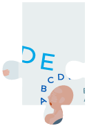
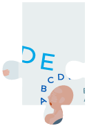
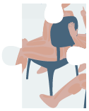
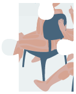
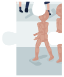
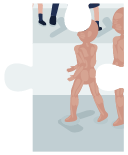
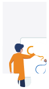

Algunos aspectos sobre pedagogía y didáctica
¿Ha recibido alguna formación para ser docente? ¿Reconoce los diferentes modelos pedagógicos? ¿Identifica los elementos que usa la transposición didáctica? ¿Qué estrategias didácticas utiliza en sus clases?
Históricamente, se reconocen dos grandes tendencias pedagógicas, como se observa en la siguiente figura:

La didáctica es una rama de la pedagogía y es la disciplina que estudia el proceso docente educativo. Solo se dedica al proceso sistémico, organizado y eficiente que realizan los docentes sobre sus fundamentos teóricos.

Con el fin de generar una familiarización con estos conceptos, se le invita a resolver tres ejercicios que no pretenden evaluarlo, sino ayudarlo/a a reconocer qué claridad tiene sobre:
- Modelos pedagógicos más conocidos en nuestro medio.
- Conceptos básicos de la transposición didáctica.
- Aspectos a tener en cuenta en la preparación de sus actividades académicas.
¡Comience!
- Modelos pedagógicos
-
Modelos pedagógicos
Desde la perspectiva de Flórez Ochoa (1999), un modelo pedagógico responde a:
- ¿Qué tipo de ser humano interesa formar?
- ¿Cómo o con qué estrategias metodológicas y evaluativas?
- ¿A través de qué estándares, contenidos, ejes temáticos y saberes?
- ¿A qué ritmo de aprendizaje debe adelantarse el proceso de formación?
- ¿Cuál es el tipo de relación entre maestro y estudiante?
A continuación, encontrará cuatro ambientes de aprendizaje que se irán formando a medida en que ubique cada una de las ocho características que corresponden a los cuatro modelos pedagógicos conocidos en nuestro medio.
 

 


Tradicional

 


Conductista



Desarrollista


Socialista
Los pilares son la razón y la moral.Estimula la capacidad reflexiva y crítica.Los contenidos son enciclopédicos.El estudiante es el centro del proceso.El docente es un guía o un facilitador.El método es transmisionista.La evaluación es memorística y cuantitativa.El método es transmisionista.El estudiante va cobrando protagonismo.Los medios se diversifican.Los contenidos son enciclopédicos.El trayecto es lineal, predecible y controlable.El docente es un líder activo en este proceso.La evaluación puede ser individual o colectiva.En el método prima el aprendizaje sobre la enseñanza.Los medios en este modelo se refieren a “hacer ciencia”.La evaluación es por procesos, es decir, cualitativa.El maestro es el protagonista, transmisor y severo castigador.Busca formar agentes transformadores del entorno.El estudiante es el receptor memorístico y se cree que llega con la cabeza vacía.Los principales medios que se usan son el tablero y la tiza.El eje es moldear la conducta del individuo según las necesidades productivas.El ser humano es el diestro; un técnico útil a los intereses del estado.La evaluación se sistematiza con el test de selección múltiple pero, en esencia, de carácter memorístico.Se fundamenta en el desarrollo cognitivo de los estudiantes desde sus intereses.El método es por descubrimiento; los conocimientos se adquieren por contacto con la realidad.El objetivo es desarrollar habilidades de pensamiento en los individuos para hacerlos partícipes del mundo actual.Se fundamenta en la responsabilidad del estudiante ante su proceso de aprendizaje.El currículo se modifica según las necesidades particulares.Las estrategias surgen a partir de las necesidades sociales.Los medios son talleres y trabajos grupales, entre otros.El ser humano se considera un erudito con conocimiento amplio de todas las ramas.
Revisa y compara las relaciones y diferencias entre los diferentes modelos. ¿Qué modelo impera en tu práctica docente?
- Transposición didáctica
-
Transposición didáctica
En la didáctica, se habla del concepto de transposición didáctica como “el paso del saber sabio al saber enseñado”. Los saberes sabios son los que producen los sabios, genios, científicos y artistas. La transposición didáctica se refiere a que la enseñanza universitaria se encarga de posibilitar que los saberes sabios se constituyan en saberes por enseñar, en saberes enseñados, en saberes por aprender y en saberes aprendidos.
Realice el siguiente crucigrama, en donde se describen algunos conceptos importantes de la educación y de la transposición didáctica.
- Estudia el desarrollo de los procesos cognitivos y la personalidad de los estudiantes.
- Estudia el proceso docente educativo.
- Es el proceso de construirse a sí mismo una imagen mediadora a través de la relación del individuo, no solo con las cosas, sino con los otros.
- Se refiere a la organización espacial y temporal del proceso docente educativo, es decir, se encarga de la distribución de los estudiantes en relación con el profesor y su asignación con los intervalos de tiempo correspondientes.
- Es lo que va a ser enseñado y comprende tanto las habilidades, como los conocimientos que el estudiante asimilará en su proceso de aprendizaje. Este concepto puede ser de carácter laboral, académico e investigativo.
- Es el punto de partida para diseñar el proceso docente educativo y se convierte en el tipo de método fundamental de aprendizaje.
- Se realiza para comprobar el grado de cumplimiento del objetivo y verificar si el problema fue solucionado. Puede ser de diagnóstico, formativa o de acreditación.
- Pretende que el estudiante realice actividades previas de lectura y escritura para entrar a confrontar el conocimiento en un diálogo horizontal con el profesor.
- Es el camino que construye el alumno para alcanzar su objetivo en la resolución de problemas. Existen varias clasificaciones de este concepto; la primera, se refiere al grado de participación de los estudiantes y se divide en expositivo, de elaboración conjunta y de trabajo independiente; la segunda, se refiere al grado de dominio que tengan los estudiantes sobre el contenido y en correspondencia con los niveles de asimilación, se segmenta en reproductivo, productivo y creativo; la tercera corresponde con la lógica del desarrollo del proceso docente educativo y se subdivide en introducción del nuevo contenido, desarrollo del contenido, dominio del contenido, sistematización del contenido y evaluación del aprendizaje; y la cuarta, corresponde a la forma en que estimula la actividad productiva y se divide en exposición problémica, búsqueda parcial, heurística, investigativa, juegos didácticos, mesas redondas, paneles, discusiones temáticas, estudios de casos y métodos sugestopédicos, entre otros.
- Estudia la formación, en general, de la personalidad de los hombres y de las mujeres que integran una sociedad.
- Es el registro de todas las acciones educativas dentro de la escuela.
- Es la aspiración, el propósito que se quiere formar en los estudiantes. Se clasifica de acuerdo al grado de transcendencia en la transformación que se espera lograr de los estudiantes, en instructivos desarrolladores y educativos.
- Son objetos didácticos hechos para el trabajo docente y van desde un lápiz hasta un computador, desde un espejo hasta un telescopio, desde un herbario hasta un zoológico, desde un balón hasta un libro. Se dividen en ayudas didácticas como pantallas, proyectores y tableros, y en medios auxiliares que son los que crean condiciones confortables para organizar el proceso docente educativo, como el salón de clases tradicional o las aulas inteligentes.
- Esta clase trata de afianzar el desarrollo de habilidades del estudiante mediante ejercicios de simulación como talleres, estudios de casos o laboratorios.
- Clase magistral que se desarrolla para informar conocimientos.
Si le interesa conocer un poco más haga clic aquí.